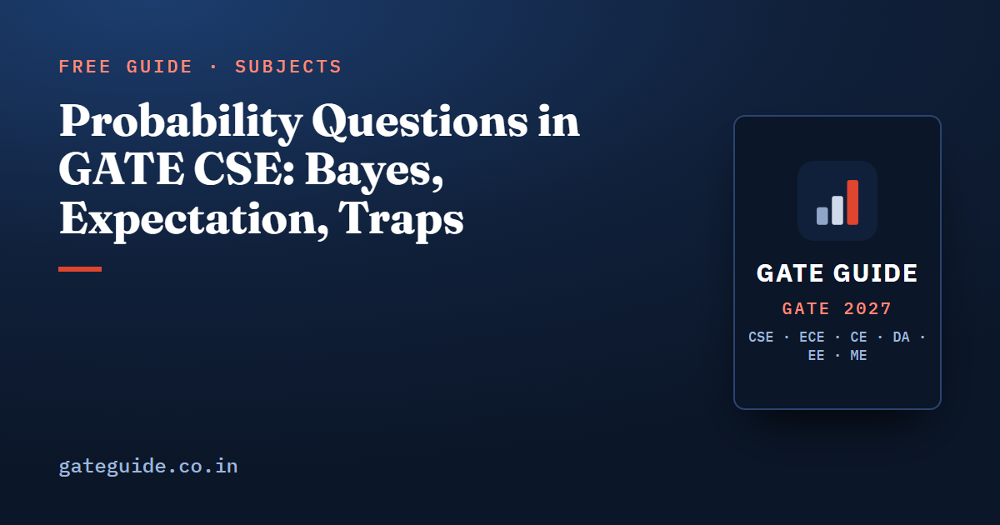

Probability Questions in GATE CSE: Bayes, Expectation, Traps

Probability is the most reliable part of GATE CSE mathematics. Conditional probability and Bayes theorem score 94.0 out of 100 in the book's evidence model, tied with eigenvalues for the top of the section, and a conditional probability item appears in some form in essentially every paper reconstructed from 2010 to 2026. This guide covers the four patterns that generate almost all of it.
In this guide
Key takeaways
- Four patterns cover the ground: conditional probability and Bayes, expectation and variance, the named distributions, and descriptive statistics.
- Bayes questions change their story every year and keep their arithmetic. Practise the arithmetic.
- The base-rate trap is deliberate. A highly accurate test on a rare condition still produces mostly false positives.
- Almost all of these items are numeric answer type, so an attempt cannot cost you marks.
- Descriptive statistics is named in the syllabus but scores only 53.0. It is cheap to prepare and should not eat Tier 1 time.
What the syllabus actually names
The official GATE 2027 CS syllabus lists, under Probability and Statistics, random variables, the uniform, normal, exponential, Poisson and binomial distributions, mean, median, mode and standard deviation, and conditional probability and Bayes theorem. That wording is unchanged from 2026.
Nothing beyond that list is in scope. Regression, hypothesis testing and confidence intervals are not named and have not been tested in the recent papers. Confirm the current syllabus yourself at gate2027.iitm.ac.in before you plan around it.
| Pattern | Years asked (approximate) | Usual format | Model score |
|---|---|---|---|
| Conditional probability, total probability, Bayes | 2005, 2008, 2010-2026 in some form | NAT 2M | 94.0 |
| Expectation, variance, linearity with indicators | 2011, 2013-2015, 2017-2025 | NAT 1-2M | 84.5 |
| Named distributions (uniform, exponential, Poisson, binomial, normal) | 2011, 2013-2016, 2019, 2021, 2023, 2024, 2025 | NAT or MCQ 1-2M | 81.0 |
| Mean, median, mode, standard deviation | 2015, 2018, 2021, 2023, 2025 | NAT 1M | 53.0 |
Years are an analyst reconstruction from public archives and are approximate. Scores are model based analytical confidence values, not probabilities that a question will appear in 2027.
Pattern 1: conditional probability and Bayes
The template has barely changed in twenty years. Two or three sources contribute known shares of a population, each with its own error or defect rate, an item is drawn and found defective, and you are asked which source it probably came from. The framing rotates through machines, suppliers, students, urns, dice and medical tests.
The method never rotates. Write the posterior as the one path you care about divided by the sum over every path:
A factory takes 60 percent of its parts from supplier A with a 2 percent defect rate, and 40 percent from supplier B with a 5 percent defect rate. A part is found defective. The probability it came from B is:
Two habits protect you. Write the denominator in full before dividing anything, and label which conditional you have been given. The single most repeated trap in this pattern is answering with the probability of the evidence given the source when the question asked for the source given the evidence.
Pattern 2: the base-rate trap
This is Pattern 1 with numbers chosen so that intuition fails. Suppose a test detects a condition in 99 percent of the people who have it and returns a negative result for 95 percent of those who do not, and the condition affects 1 person in 1,000. A person tests positive. The posterior is:
That is under 2 percent.
The reason is the base rate. Out of 100,000 people, about 99 true positives are swamped by about 4,995 false positives. Nothing about the test is faulty; the prior is doing the work. If a GATE probability answer looks surprising, check whether the prior was small before you assume you made an arithmetic error.
The book scores all 25 Engineering Mathematics concepts on the same model and pairs each probability pattern with worked practice questions covering its variants.
Pattern 3: expectation and variance
Linearity of expectation is the highest-value idea in this pattern because it needs no independence. Define an indicator variable for each event you want to count, take the expectation of each, and add them.
A fair die is rolled six times. What is the expected number of faces that never appear? For each face, the probability it is missed on all six rolls is . Summing six such indicators gives . The same trick counts expected fixed points of a permutation, expected matches, and expected hash collisions.
For variance, three identities carry almost everything: the variance equals the expectation of the square minus the square of the expectation, scaling by a constant multiplies the variance by the square of that constant, and for independent variables the variances add whether you take the sum or the difference.
A quick check: if is uniform on the interval from 2 to 8, then:
Notice that the variance identity, not integration, did the work.
Pattern 4: the named distributions
Each named distribution contributes one or two standard computations.
- Uniform. Mean is the midpoint, ; variance is the square of the width divided by 12, ; interval probabilities are ratios of lengths.
- Exponential. Mean is for rate , and the distribution is memoryless. If a component's lifetime is exponential with a mean of 4 hours, the probability it survives 2 more hours given that it has already lasted 3 is just the probability it survives 2 hours from new: .
- Poisson. Mean equals variance equals , the rate times the window. Rescaling the rate to the window asked is where marks are lost. If requests arrive at 6 per hour, the rate for a 10-minute window is , so the probability of exactly 2 requests is .
- Binomial. Mean is , variance is , and the questions ask for at-least- probabilities.
- Normal. Rarely more than symmetry, the fact that mean, median and mode coincide, and manipulation of the standard normal.
Geometric waiting times sit alongside these. The expected number of trials to a first success is the reciprocal of the success probability, , which is the backbone of the "a die is thrown until" family.
The traps that repeat
| Trap | The correct rule |
|---|---|
| Swapping the two conditionals in Bayes | Write the total-probability denominator explicitly |
| Using a per-hour Poisson rate for a 10-minute window | Rescale the rate to the interval asked |
| Taking the exponential mean as the rate | The mean is for rate |
| Subtracting variances for a difference of variables | For independent variables the variances add |
| Confusing independence with mutual exclusivity | Independent means the product rule holds, which mutually exclusive events with non-zero probability never satisfy |
These sit alongside every other subject's traps in the common mistakes guide, and the formulas appear in the GATE CSE formula sheet.
How to practise probability for the exam
Work in the format the paper uses. Since most of this is numeric answer type, practise typing three-decimal answers and keep a written record of where your rounding differs from the key, as described in the MCQ, MSQ and NAT strategy guide.
Build a single-page card with the Bayes template, the indicator trick, the variance identity and the five distribution lines, and rewrite it from memory once a week. Then read the rest of the section's priorities in Engineering Mathematics important topics and check where probability sits in the wider most repeated topics ranking.
Frequently asked questions
Is probability important for GATE CSE?
Yes. Conditional probability and Bayes theorem score 94.0 out of 100 in the book's eight-factor model, tied for the highest score in the whole mathematics section. The reconstructed record shows a conditional probability item in some form in every paper from 2010 to 2026. Expectation and variance follow at 84.5, with a rising recent trend.
Which probability distributions are in the GATE CSE syllabus?
The official syllabus names uniform, normal, exponential, Poisson and binomial distributions, along with random variables and the descriptive measures mean, median, mode and standard deviation. Geometric waiting times appear through questions about the number of trials to a first success, even though the name is not in the syllabus text.
How many marks does probability carry in GATE CSE?
There is no separate official allotment. The whole Engineering Mathematics section is about 13 marks on the official pattern page, and probability is one of its four sub-areas. Analyst compilations covering 2016 to 2026 put linear algebra, calculus and probability together between 4 and 14 marks, a range that is approximate and varies by source.
What is the base-rate trap in GATE probability questions?
It is the habit of reading a test accuracy as a posterior probability. When a condition is rare, most positive results are false positives even for an accurate test. The fix is mechanical. Write Bayes with the full total-probability denominator summed over every source, and never reuse the given conditional in the wrong direction.
Do probability questions come as numeric answer type?
Mostly, yes. Bayes posteriors, expectations, variances and Poisson probabilities are almost always numeric answer type worth 1 or 2 marks, which means no negative marking on an attempt. Multiple-select questions appear for statements about independence, memorylessness and the properties of named distributions.
How should I revise probability in the last month?
Revise the formula card rather than the theory. Bayes with the denominator written out, linearity of expectation with indicator variables, the variance identity, the uniform variance, exponential memorylessness and the Poisson rescaling rule cover almost every past pattern. Then solve timed sets so the arithmetic, not the concept, becomes the limiting factor.
Sources
- GATE 2027 official website (IIT Madras)
- Official GATE 2027 CS syllabus (PDF)
- GATE Overflow previous year question archive
- GeeksforGeeks subject-wise weightage for GATE CS
Dates, fees and the syllabus are set by the GATE 2027 organising institute and can change. Always confirm at gate2027.iitm.ac.in.